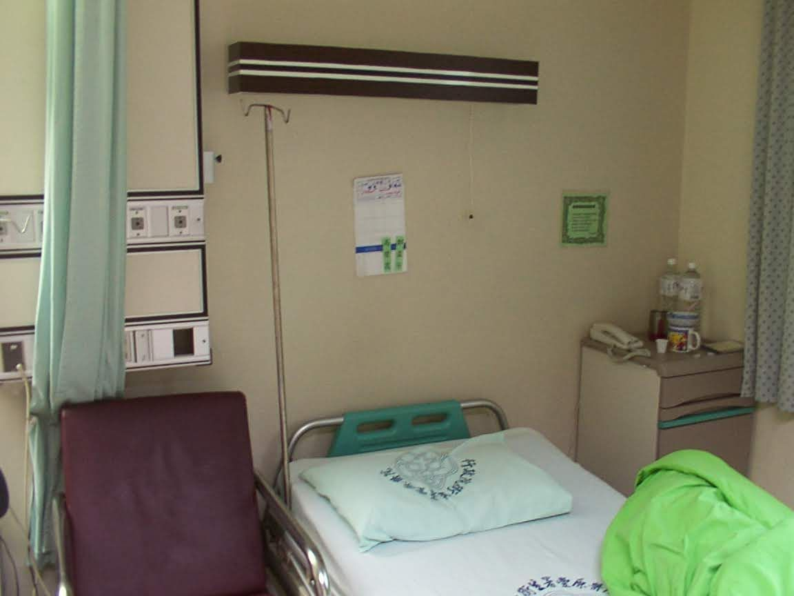

05 Euthanasia and autonomy
Is choosing one's death also a form of freedom?

Around 2020, Taiwan’s image of Switzerland gained another layer: assisted dying. Sports broadcaster Fu Da-ren went to Switzerland in 2018 and ended his life at Dignitas; execution fees alone, without travel, were reported near US$10,000.
As a pure business model, the service has low cost and high margin—but the real sting is autonomy: who may decide the path after ‘nothing more can be done.’
In December 2002, my mother underwent chemotherapy at provincial Fengyuan Hospital. If she had had a legal choice then, would the story have been different? This is not a statistics problem; it is a midnight every family may face.
Economically, could assisted dying free NHI resources for more treatable patients? Does the right to choose bring more human rights and freedom? Switzerland built this into institution and industry; Taiwan mostly stays in moral dispute.
I will not reduce life to a cost sheet. I only open the question: when medicine can prolong both pain and dignity, society needs rational debate—not permanent avoidance.

Source: Taiwan's Great Future — Switzerland Today, Taiwan Tomorrow — Eugene Chang · 1. Switzerland & Taiwan · 4. Industry, finance, insurance & health